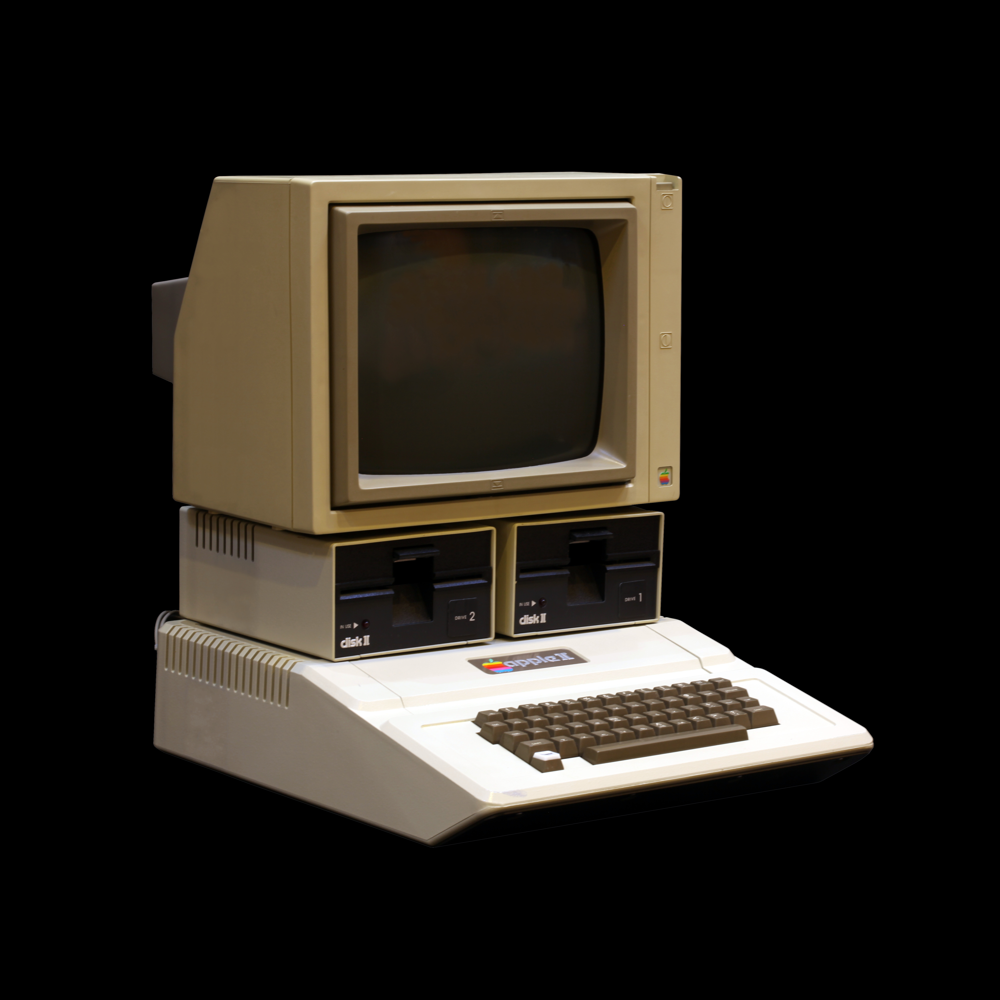
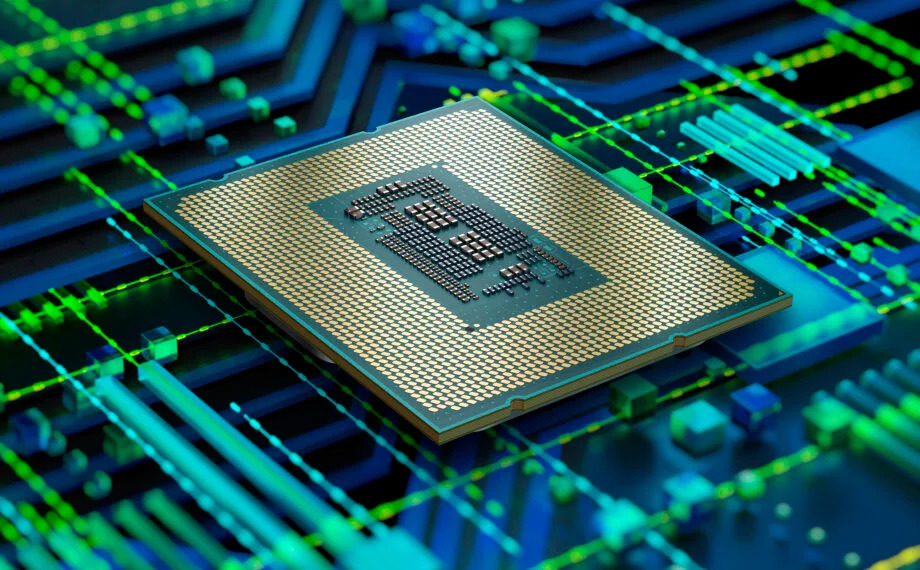
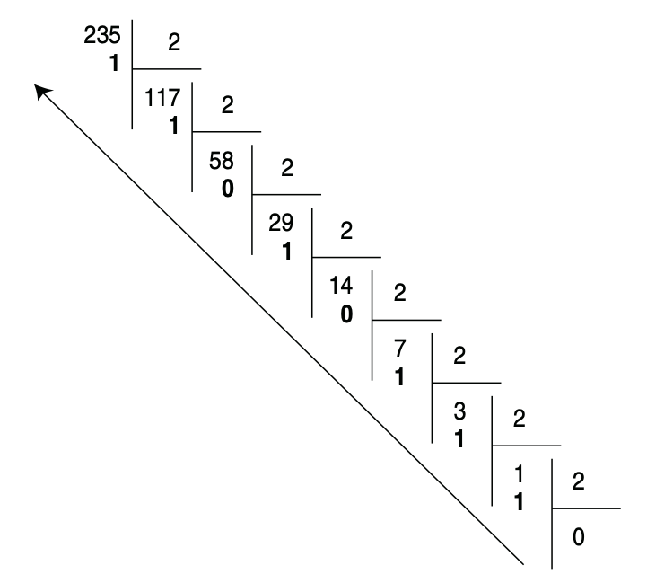
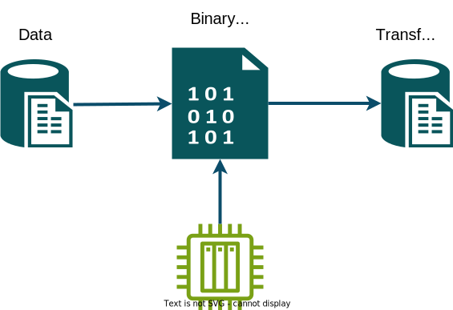
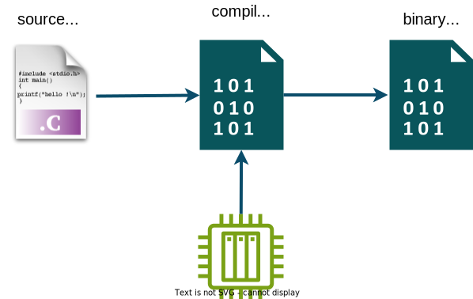

Computer Architecture
and Software Execution Process
Introduction to Computer Architecture
Bachelor in Artificial Intelligence, Data and Management Sciences
CentraleSupelec and ESSEC Business School - 2025/2026
CentraleSupelec and ESSEC Business School - 2025/2026
Idir AIT SADOUNE

-
Associate-Professor at the Computer Science Department
of CentraleSupelec - Paris-Saclay University.- Teaching in Engineering and Bachelor programs
- Algorithmic and Complexity, Object-Oriented design and programming, Software Engineering, Operating Systems, Modelling and Verification using Formal Methods, etc.
-
Researcher at the Model and Proof Teams
of Formal Methods Laboratory - LMF of Paris-Saclay.- Formal methods for system modelling and verification.
- Refinement and proof-based methods
Discussion about
students' expectations
- go to wooclap.com
- enter the XNNZZB code in the top banner to join a Wooclap event

Learning outcomes and assessment
Main objective $\to$ Demystify the computer and its internal components.
- Identify and analyze the main components of a computer system
- processor, memory, input/output devices, etc.
-
Explain the organization and operation of these components
- how the processor, memory, and peripherals work
-
Understand program execution.
- how a processor interprets and executes a Python program
Syllabus
| Chapter | Lecture | Tutorial | Lab session |
|---|---|---|---|
| Computer Architecture $\to$ Introduction | 1h30 | ||
| Operating systems | 1h30 | ||
| Data representation | 1h30 | 1h30 | |
| Internal Architecture of Microprocessors | 1h30 | 1h30 | 2 $\times$ 3h00 |
| Memory management | 1h30 | 1h30 |
Assessment of learning outcomes
- The practical session exam during the Lab sessions (40%)
- The final written exam (60%)
Communication & Organization
- Course website
-
Questions & discussions
- before, during, and after sessions
- outside class hours if needed
-
Contact
- email $\to$ idir.aitsadoune@centralesupelec.fr
- remote meetings $\to$ MS TEAMS
Computer science
- Computer science is the science of automatic information processing.
-
Information processing is done with programs executed by machines.
- programs (software) describe the process/algorithm to be executed,
- machines (hardware) run programs.
The concept of computer


A computer is a machine that can be programmed
to automatically
execute a sequence of operations (program).
-
We provide the computer with:
- program (software)
- data (information)
- The computer processes the data by executing the program
The concept of computer
- But today a computer does much more than that ...
-
Solving complex problems
- achieved by following a program
- a sequence of instructions describing how a problem is solved
-
Two main categories of computers
- personal computer
$\to$ (PCs) - on-board (embedded) computers
$\to$ (train control systems, medical devices, TV, smartphone, ...)
- personal computer
Computer Architecture ?
- Architecture
- a general term to describe buildings and other physical structures
- the art and science of designing structures
-
Computer
- a machine that can be programmed
to automatically execute
a sequence of operations (program)
- a machine that can be programmed
to automatically execute
-
Computer Architecture
- explaining how a computer is designed and how programs run on it
ENIAC - 1945
- was designed in 1945 by
John Mauchley
and John Eckert
at the University of Pennsylvania. - was the first programmable, electronic, general-purpose digital computer.
- was a large, modular computer with individual panels performing different arithmetic functions.

HP 3000 - 1972
-
was designed to be the first minicomputer with full support
for time-sharing. - first implemented with Transistor-transistor logic.
-
integrating integrated circuits
on a large scale led to the development of microprocessors.

Apple II - 1977
- one of the first highly successful mass-produced microcomputer products.
- designed by
Steve Wozniak,
and launched in 1977 by Apple.

Today's computers
- System on a Chip
(SOC) :
a complete system embedded in a chip (integrated circuits). - An integrated circuits can contain:
- one or more microprocessors,
- memory,
- interface devices,
- or any other component


Layered organization
All these systems are built
on a single model
- a hardware architecture
- a set of devices
- an operating system
- a set of applications
Layered organization

A hardware architecture
The computer components

Binary system

- All computer components are electronic devices that process and store information.
- electronic devices $\to$ circuits that perform logic & arithmetic operations.
-
electronic devices $\to$ manipulate two logical values (Binary digITs - bits).
- a weak signal between 0V and 1V $\to$ value 0 or bit 0.
- a high signal between 2V and 5V $\to$ value 1 or bit 1.
-
electronic devices $\to$ manipulate a sequence of bits representing numbers
or complex data.
Binary system
Decimal $\to$ Binary of $235_{10}$
$235 \div 2 = 117$ $\to$ remainder $= 1$
$117 \div 2 = 58$ $\to$ remainder $= 1$
$58 \div 2 = 29$ $\to$ remainder $= 0$
$29 \div 2 = 14$ $\to$ remainder $= 1$
$14 \div 2 = 7$ $\to$ remainder $= 0$
$7 \div 2 = 3$ $\to$ remainder $= 1$
$3 \div 2 = 1$ $\to$ remainder $= 1$
$1 \div 2 = 0$ $\to$ remainder $= 1$
$117 \div 2 = 58$ $\to$ remainder $= 1$
$58 \div 2 = 29$ $\to$ remainder $= 0$
$29 \div 2 = 14$ $\to$ remainder $= 1$
$14 \div 2 = 7$ $\to$ remainder $= 0$
$7 \div 2 = 3$ $\to$ remainder $= 1$
$3 \div 2 = 1$ $\to$ remainder $= 1$
$1 \div 2 = 0$ $\to$ remainder $= 1$

Binary system
Binary $\to$ Decimal of $1100100_2$
$(0 \times 2^0) + (0 \times 2^1) + (1 \times 2^2) + (0 \times 2^3) + (0 \times 2^4) + (1 \times 2^5) + (1 \times 2^6)$
Useful power of $2$
- 2$^0$ = 1
- 2$^1$ = 2
- 2$^2$ = 4
- 2$^3$ = 8
- 2$^4$ = 16
- 2$^5$ = 32
- 2$^6$ = 64
- 2$^7$ = 128
- 2$^8$ = 256
- 2$^9$ = 512
- 2$^{10}$ = 1024
- ...
Binary system
Exercise
Useful power of $2$
- 2$^0$ = 1
- 2$^1$ = 2
- 2$^2$ = 4
- 2$^3$ = 8
- 2$^4$ = 16
- 2$^5$ = 32
- 2$^6$ = 64
- 2$^7$ = 128
- 2$^8$ = 256
- 2$^9$ = 512
- 2$^{10}$ = 1024
- ...
-
Convert these decimal numbers to binary:
- 8, 13, 15, 2025, ...
Base 16 or Hexadecimal System
-
The hexadecimal system uses 16 symbols.
- digits $\to$ 0 to 9
- letters $\to$ A, B, C, D, E, F
0000 0001 0010 0011 0100 0101 0110 0111 1000 1001 1010 1011 1100 1101 1110 1111 0 1 2 3 4 5 6 7 8 9 A B C D E F -
The hexadecimal number format is more compact than the binary one
- four binary digits are represented by one hexadecimal digit
- an easier way for humans to read and write binary data
-
A binary representation of a big decimal number can be pretty long.
- ex. $154863_{10} = 100101110011101111_2$ $= 10/0101/1100/1110/1111_2$
- ex. $154863_{10} = 100101110011101111_2 = 25CEF_{16} =$ 0x$25CEF$
10 0101 1100 1110 1111 2 5 C E F
Base 16 or Hexadecimal System
| 0000 | 0001 | 0010 | 0011 | 0100 | 0101 | 0110 | 0111 | 1000 | 1001 | 1010 | 1011 | 1100 | 1101 | 1110 | 1111 |
|---|---|---|---|---|---|---|---|---|---|---|---|---|---|---|---|
| 0 | 1 | 2 | 3 | 4 | 5 | 6 | 7 | 8 | 9 | A | B | C | D | E | F |
-
Convert these decimal numbers to hexadecimal:
- 8, 13, 15, 2025, ...
Data measurement unit - BYTE
-
The byte is a unit of digital information that most commonly consists of 8 bits.
- 1 byte = 8 bits (binary digits)
-
A byte measures the capacity of digital storage devices.
- how many bytes is it possible to store in a memory?
- Multiples of byte
- 1 Kilobyte (KB) =
2$^{10}$ bytes = 1 024 bytes $\approx$10$^3$ bytes - 1 Megabyte (MB) =
2$^{20}$ bytes = 1 024 KB = 1 048 576 bytes $\approx$10$^6$ bytes - 1 Gigabyte (GB) =
2$^{30}$ bytes = 1 024 MB = 1 073 741 824 bytes $\approx$10$^9$ bytes - 1 Terabyte (TB) =
2$^{40}$ bytes = 1 024 GB = 1 099 511 627 776 bytes $\approx$10$^{12}$ bytes
- 1 Kilobyte (KB) =
-
A byte can correspond to a binary code (a squence of 8 bits) representing
a displayed character of a letter, a number, or a symbol (ex., “h”, “7”, or “$”)- will be discussed later in the chapter 3.
The computer components
The computer components
-
What can a computer (processor) do?
- copy values between storage units
- perform logical/arithmetic operations between stored values
- move within the program, possibly conditionally
Machine Language
-
A processor executes a very low level language (Machine Language)
- the instructions of this kind of language execute elementary operations.
- machine instructions control electronic/logic circuits.
-
Machine language programming must be optimized and simple to decode
- each instruction represented by a sequence of binary digits (bits).
- we represent these codes in hexadecimal form

Assembly language
-
Programming directly in binary is impractical. - An equivalent symbolic representation (Assembly language) exists
- textual mnemonics for operations/functions
- textual writing of the entire program
- Assembly language
- very close to the machine - considered a low-level language
- requires detailed knowledge of the processor's architecture
- each instruction corresponds almost directly to a machine code operation
- Assembler $\to$ translator from assembly language to machine language.
High level programming language
-
Most software is written in a high-level programming language.
- example $\to$ Python, Java, C, C++, ...
-
High-level language $\to$ expressing instructions using words and mathematical symbols.
- easy to learn.
- does not require knowledge of the machine's processor.
-
Provide abstract concepts that are not present in machine language.
- data types $\to$ integers, reals, strings, array, ...
- control structures $\to$
if ...then ...else ,while ,for , functions.
high-level language vs low-level language
-
From High-Level Code to Execution
- Programmer writes $\to$ High-level language
- Processor executes $\to$ Low-level code (binary)
-
How is a high-level program executed?
- Compilation process
- Interpretation process
The compilation process
converting the entire program into binary code before execution
The compiler is itself a program
Compilation is performed only once
- No more need for source code
- No more need for a compiler
- The two most popular compiled languages are C and C++.
- used in games, software, artificial intelligence, operating systems, and more.
The interpretation process
translating and executing the program line by line
- Still need the source code
- Still need the interpreter
- No binary code created
The interpreter is itself a program

- The two most popular compiled languages are Python and Javascript.
- used in web development, data science, machine learning, and more.